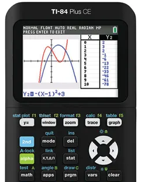

About the TI-84 Calculator Online
The TI-84 Plus CE online calculator provides a convenient way to perform graphing and mathematical calculations directly in your browser. It offers useful tools for working with equations, functions, graphs, statistics, and other mathematical problems, without requiring a software download.
Designed for students, teachers, and professionals, this online calculator supports learning, problem-solving, and calculations across mathematics, science, engineering, and statistics.

Key Features
📊 Graphing Functions
Graph and compare mathematical functions, explore polar and parametric equations, and work with sequences.
📈 Statistical Analysis
Calculate statistical measures, perform regression analysis, and explore data using histograms, box plots, and other statistical graphs.
🔢 Advanced Mathematics
Work with complex numbers, matrices, lists, equations, and a wide range of mathematical operations.
💻 Browser-Based Access
Use the calculator directly in your web browser without installing additional software.
🎓 Learning and Exam Preparation
Practise graphing, algebra, statistics, and other mathematical concepts for coursework and exam preparation. Check exam rules before using an online calculator during a test.
🔧 Adjustable Display
Adjust the calculator's display size using the available zoom controls for a more comfortable viewing experience.
How to Use
- Enter your calculations: Click the on-screen calculator buttons with your mouse or tap them on a touchscreen device.
- Adjust the display size: Use the available zoom controls (+ and -) to resize the calculator for easier viewing.
- Perform calculations: Use the available functions to solve equations, graph functions, analyse statistics, and work through mathematical problems.
Who Can Use
Students: Practise mathematical problems, explore graphs, complete coursework, and prepare for exams using a range of calculator functions.
Teachers: Demonstrate calculations, graph functions, and explain mathematical concepts during classroom lessons.
Parents: Support children with maths homework by exploring equations, graphs, and other calculator features together.
Professionals: Perform calculations, analyse numerical data, and explore mathematical relationships for technical and analytical tasks.
Supported Calculator Functions
The online TI-84 Plus CE calculator provides a range of mathematical tools for everyday calculations, graphing, and statistical analysis. Available functions include:
- Basic arithmetic, fractions, and numerical calculations
- Trigonometric functions, including sine, cosine, tangent, and their inverses
- Logarithmic and exponential calculations
- Matrix calculations and operations
- Complex number calculations
- Statistical analysis, probability distributions, and regression
- Function graphing with zoom and trace tools
- Lists and statistical data management
- Function tables for examining input and output values
- Additional calculator features, depending on emulator support
System Requirements
To use the TI-84 Plus CE calculator online, your device should have the following:
- A modern web browser, such as Chrome, Firefox, Safari, or Edge
- An internet connection to load the calculator
- JavaScript enabled in your browser
The calculator can be accessed on compatible Windows, macOS, Linux, iOS, Android, and ChromeOS devices. The layout and available controls may vary depending on your screen size and browser.
Start Using the Calculator
Ready to solve equations, graph functions, or perform calculations? Open the calculator above and get started.
Go to Calculator ↑